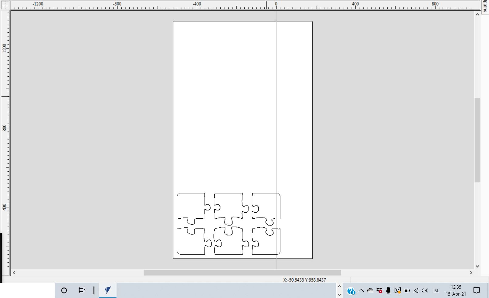
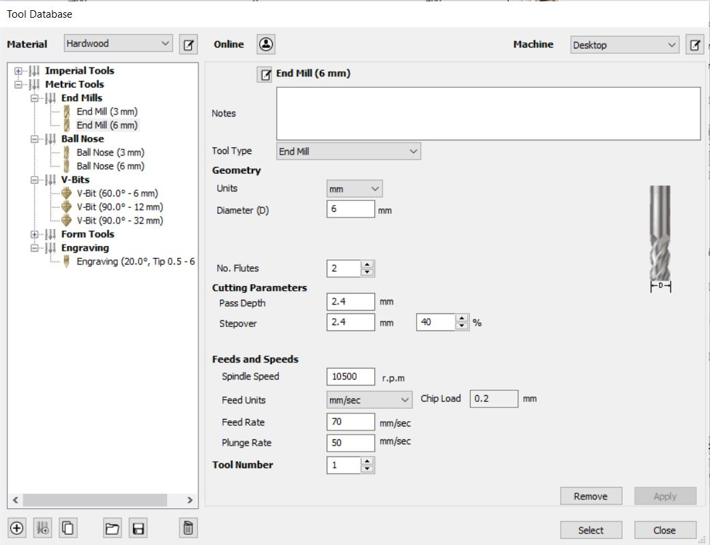
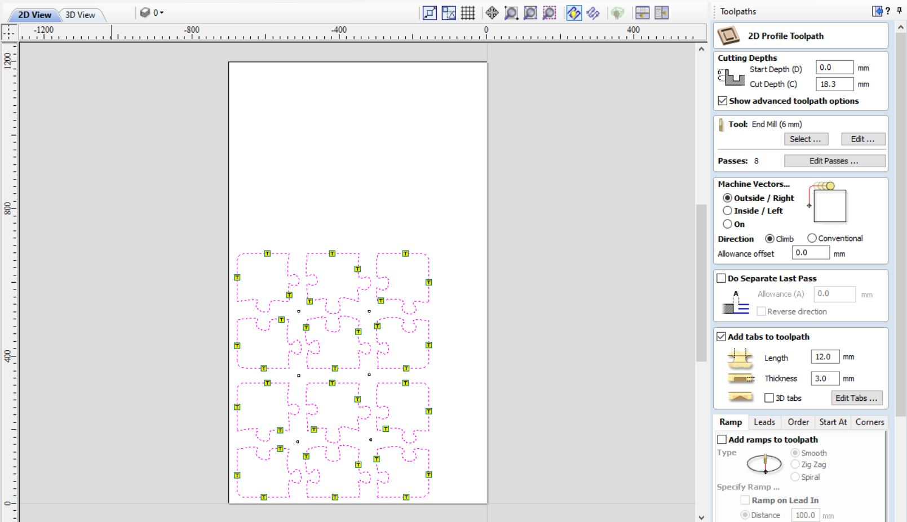

Verkefni 4 - Að fræsa eitthvað stórt

Skipting verkefnis
Í þessu verkefni á að hanna, teikna, undirbúa og fræsa út eitthvað stórt. Það átti að fræsa út úr krossvið og síðan að skrásetja afrakstur verkefnisins á síður hópmeðlima. Það sem að hópurinn ákvað að fræsa út var skurðarbretti. En hópmeðlimir mínir í þessu verkefni eru Birta Hákonardóttir og Elísa Ósk Jónsdóttir. Verkefnið í heild sinni má nálgast í hnappnum hérna að neðan
Skipting verkefnis
Í þessu verkefni fékk Birta það hlutverk að hanna og teikna hlutinn, ég fékk það hlutverk að undirbúa hlutinn fyrir fræsingu og svo hafði Elísa umsjón yfir fræsingu
Undirbúiningur fyrir fræsingu í VCarve
Birta sá um hönnun og teikningu verkefnisins en hennar hluta má nálgast með því að ýta á hnappinn hér fyrir neðan
Eftir að Birta var búin að teikna hlutinn þá gat ég byrjað að undirbúa verkefnið fyrir fræsingu. Forritið sem að notast var við kallast VCarve og má nálgast það í hnappnum hér að neðan
Eftir að ég var búinn að ná í VCarve á tölvuna mína þá hófst ég við það að setja forritið upp fyrir fræsarann í FabLab, þá þurfti ég að fara á þessa síðu hér og afrita kóðann neðst á síðunni og setja í "Makerspace ID" þá var forritið mitt tengt við fræsarann í Fablab. Þá gat ég opnað DXF-skrá sem að innihélt hönnunina hennar Birtu eftir að ég skilgreindi vinnusvæðið okkar 700mm x 1200mm sem að var svæðið sem að við máttum vinna með, síðan þurfti að stilla þykkt efnisins en viðurinn sem varð fyrir valinu var 18mm þykkur og þá leit verkefnið svona út
Síðan "copy pasteaði" ég púslin þar sem að hópurinn vildi gera tvö skurðarbretti síðan setti ég litla hringi á milli púslana sem að voru til þess að setja skrúfur í þau til að festa niður viðarplötuna. Þá gat ég hafist handa við að gera toolpaths.
Þá opnaði ég toolpath flipann í VCarve og ég byrjaði á því að velja bitann sem að ég vildi nota en það var Metric End Mill 6mm biti sem var til uppí FabLab. Fleiri stillingar eins og spindilharði má sjá á mynd hér að neðan
Síðan valdi ég litlu hringina og valdi drilling toolpath í toolpath flipanum. Síðan stillti ég dýptina á skuðinum í aðeins 1mm þar sem að götin voru einungis leiðavísar fyrir skrúfur svo ýtti ég á calculate og þá var hægt að sjá hvert fræsirinn myndi fara.
Síðan var komið að því að gera toolpath fyrir púslin en þá valdi ég alla púsl vectorana og valdi profile toolpath ég valdi þykktina 18,3 mm því að við viljum fara í gegnum efnið okkar, sami biti og bitastillingar voru valdar og fyrir litlu hringina. Síðan voru settir tabar á hvert og eitt púsl, 3 á hvert. En þeir voru 3mm þykkir og það var ekki fræst þar sem að tabarnir voru settir til þess að púslin myndu haldast föst við plötuna. En þegar yrði búið að fræsa þá þurfti að brjóta þá frá til þess að losa púslin og síðan var ýtt á calculate. Mynd af stillingum sem og lokaútkomu í VCarve má sjá hér
Síðan var komið að því að framleiðsluhluta verkefnisins en hann má finna á vefsíðu Elísu í hnappnum hérna að neðan
Tímaskráning
Tímaskráning fyrir þetta verkefni má sjá í töflunni hér að neðan
Tímaskráning fyrir verkefni 2
| Velja verkefni | 1 klst |
| Vinna í VCarve | 5 klst |
| Horfa á öryggismyndbönd | 1 klst |
| Framleiðsla | 2 klst |
| Vefsíðugerð | 3 klst |
| 12 klst |
Skrár
VCarve skrá fyrir þetta verkefni má nálgast hér